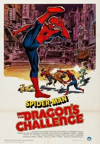
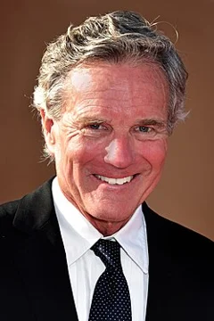
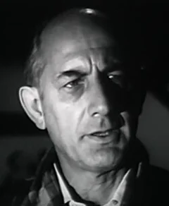
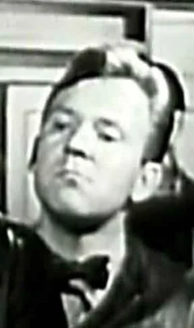
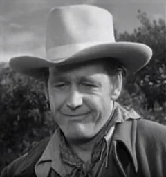

Spider-Man: The Dragon's Challenge (1979)
| Movie | Release Date | Poster |
|---|---|---|
| Spider-Man: The Dragon's Challenge action |  |
| Trailer |
|---|
| No official trailer is available for this film. |
| Rotten Tomatoes | Metacritic | IMDb |
|---|---|---|
| Not available | Not available | View on IMDb |
| Overview |
|---|
Spider-Man: The Dragon's Challenge is a 1981 American superhero film that had a theatrical release abroad, a composite of the 1979 two-parter episode "The Chinese Web" of the contemporary television series The Amazing Spider-Man, released on May 9, 1981. It was directed by Don McDougall, written by Lionel E. Siegel, and stars Nicholas Hammond as the titular character, Rosalind Chao, Robert F. Simon, Benson Fong, and Ellen Bry. It is the sequel to Spider-Man (1977) and Spider-Man Strikes Back (1978). Full plot (spoilers)Min Lo Chan, the Chinese Minister of Industrial Development, who happens to be an old college friend of J. Jonah Jameson , flees China and comes to the United States to locate three men who during the war approached him and offered him money for secrets about Mao Zedong , which he refused at the time. He stays with his niece Emily Chan, who lives in New York City. However, it appears the incident is now being investigated, and he needs to find one of them quickly to verify his innocence. He asks Mr. Jameson to help him find them, but he wants it done quietly because it seems that there are elements who want him convicted, so Jameson asks Peter Parker to find the three ex-Marines on his behalf, but also to talk to them discreetly. Meanwhile, back in Hong Kong, Charles Zeider, who is a wealthy industrialist, is among the ones being considered to build a power plant for the Chinese Government worth one billion dollars. However, he knows that Min Lo Chan is considering another company, but if he's convicted, his successor will award the contract to him. As a result, he sends Clyde Evans to make sure he does not return to China alive. As Spider-Man, Peter saves Min's life several times. However, in one of the murder attempts, Min suffers a minor heart attack and has to remain under medical observation. To trick Evans, the Daily Bugle publishes the news stating that Min has died in the hospital. Peter manages to contact the last of the Marines needed to clear Min's name, Professor Dent, who agrees to help as he also wants to clear his name. Along with Peter and Min's niece Emily, Dent flies to Hong Kong to testify, but Zeider has him kidnapped to ensure his silence. During an incident while chasing the kidnappers, Emily discovers that Peter Parker is Spider-Man. Finally, with Emily's help, Spider-Man traces Dent in Zeider's secret office at the top of a building. After defeating all of the henchmen, he captures Zeider and frees Dent. Peter Parker proceeds to return to the United States as Emily decides to stay in China and promises Peter not to reveal his secret identity. |
| Actor | Character | Photo |
|---|---|---|
| Nicholas Hammond | Spider-Man / Peter Parker |  |
| Robert F. Simon | J. Jonah Jameson |  |
| Rosalind Chao | Emily Chan | |
| Benson Fong | Min Lo Chan | No photo |
| Richard Erdman | Charles Zeider |  |
| Ellen Bry | Julie Masters | No photo |
| Chip Fields | Rita Conway | No photo |
| John Milford | Professor Dent | No photo |
| Hagan Beggs | Clyde Evans | No photo |
| George Cheung | Doctor Pai | No photo |
| Ted Danson | Major Collings | |
| Myron Healey | Lieutenant Olson |  |
| Anthony Charnota | Quinn | No photo |
| Tony Clark | Joe | No photo |
| Michael Mancini | – | No photo |
| Detail | Value |
|---|---|
| Directed by | Don McDougall |
| Written by | Not available |
| Produced by | Not available |
| Music by | Dana Kaproff |
| Cinematography | Not available |
| Edited by | Not available |
| Production companies | Not available |
| Distributed by | Columbia Pictures |
| Running time | Not available |
| MPAA rating | Not rated |
| Budget | Not available |
| Box office | Not available |
Overview, plot, and cast descriptions are from Wikipedia (CC BY-SA 4.0). Credits, ratings, and box office are from Wikidata.